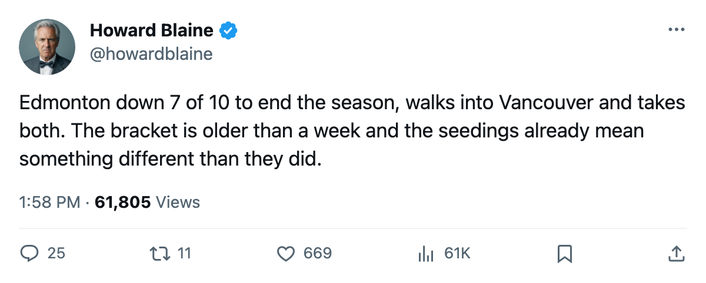
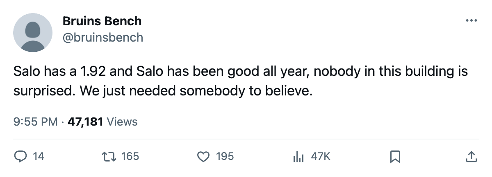

TOR
TOR NYI
NYI WSH
WSH CAR
CAR NJ
NJ PIT
PITThe Bracket, April 12: Two series all square, one 2-0 upset, and the Avalanche pushed to overtime by the 8th seed
Eight first-round series, two games in, and the standings that produced them no longer describe what is happening on the ice
 Howard BlaineSenior writer, The Blaine Rankings · The Hockey Gazette
Howard BlaineSenior writer, The Blaine Rankings · The Hockey Gazette
| Series | Score | Last result | Next game |
|---|---|---|---|
| (1) TOR v (8) NYI | TOR 2-0 | TOR 4-1 (G2, Apr 10) | Apr 12 at NYI |
| (2) NJ v (7) PIT | 1-1 | NJ 3-1 (G2, Apr 11) | Apr 13 at PIT |
| (3) TB v (6) BOS | 1-1 | BOS 5-3 (G2, Apr 10) | Apr 12 at BOS |
| (4) WSH v (5) CAR | WSH 2-0 | WSH 4-1 (G2, Apr 11) | Apr 13 at CAR |
| (1) COL v (8) PHX | 1-1 | COL 3-2 OT (G2, Apr 10) | Apr 12 at PHX |
| (2) DAL v (7) DET | DAL 2-0 | DAL 3-2 OT (G2, Apr 11) | Apr 13 at DET |
| (3) NSH v (6) ANA | 1-1 | NSH 3-1 (G2, Apr 10) | Apr 12 at ANA |
| (4) VAN v (5) EDM | EDM 2-0 | EDM 3-2 (G2, Apr 11) | Apr 13 at EDM |
Eight first-round series, two games in, and the only thing that looks the way the seedings suggested is Toronto at 2 games to none against New York. Four of the eight series are tied or led by the lower seed. No club has been eliminated. The bracket is live in every pair.
East
Toronto 2, New York 0. The Maple Leafs have outscored the Islanders 7-2 across 2 games, and  Roberto Luongo94 has faced 35 shots and stopped 33.
Roberto Luongo94 has faced 35 shots and stopped 33.  Marian Gaborik98 leads all playoff scorers with 4 points,
Marian Gaborik98 leads all playoff scorers with 4 points,  Gary Roberts88 has 4 assists, and
Gary Roberts88 has 4 assists, and  Mats Sundin91 has 3 points. Toronto went 4-1-1 against New York in the regular season, and the Islanders managed 1 goal in each game. The next meeting is at the Coliseum tonight. New York needs to find a second goal per game to be in this series, and the math of a 1-3 and 1-4 deficit has not favored teams that started from those scores.
Mats Sundin91 has 3 points. Toronto went 4-1-1 against New York in the regular season, and the Islanders managed 1 goal in each game. The next meeting is at the Coliseum tonight. New York needs to find a second goal per game to be in this series, and the math of a 1-3 and 1-4 deficit has not favored teams that started from those scores.
Washington 2, Carolina 0. The Capitals won both games on the road, 2-1 and 4-1, and  Olaf Kolzig87 has a 1.00 GAA and a .952 save percentage across 2 games.
Olaf Kolzig87 has a 1.00 GAA and a .952 save percentage across 2 games.  Jaromir Jagr84 has 3 assists. Washington finished 5-2-0 against Carolina in the regular season, outscoring them 19-13. Carolina was 24-17 at home this season but has been outscored 6-2 through the first 2 games. The series shifts to Raleigh tomorrow, where the regular-season record says it can win and the playoff results say it has not.
Jaromir Jagr84 has 3 assists. Washington finished 5-2-0 against Carolina in the regular season, outscoring them 19-13. Carolina was 24-17 at home this season but has been outscored 6-2 through the first 2 games. The series shifts to Raleigh tomorrow, where the regular-season record says it can win and the playoff results say it has not.
New Jersey 1, Pittsburgh 1. Pittsburgh took Game 1 at Continental Airlines Arena, 3-2, behind Eric Meloche77's 3 goals in the series, and New Jersey evened it 3-1 in Game 2 with  Martin Brodeur91 stopping 19 of 20 shots.
Martin Brodeur91 stopping 19 of 20 shots.  Mario Lemieux88 has 4 assists in 2 games. The series moves to Mellon Arena tomorrow, where the regular-season series went 4-3-0 to New Jersey with 4 of 7 meetings decided by one goal. The goaltending match is Brodeur (.950 on the spring) against
Mario Lemieux88 has 4 assists in 2 games. The series moves to Mellon Arena tomorrow, where the regular-season series went 4-3-0 to New Jersey with 4 of 7 meetings decided by one goal. The goaltending match is Brodeur (.950 on the spring) against  Johan Hedberg87 (.886), and the man with the better number on the road tonight is the one who will decide this game.
Johan Hedberg87 (.886), and the man with the better number on the road tonight is the one who will decide this game.
Tampa Bay 1, Boston 1. The Lightning won Game 1 in Tampa 3-2, then dropped Game 2 5-3 on a night when  Glen Murray83 scored twice and picked up three assists for 7 points across 2 games, the highest total by any player this spring.
Glen Murray83 scored twice and picked up three assists for 7 points across 2 games, the highest total by any player this spring.  Cory Stillman84 has 4 goals for Tampa Bay. The series moves to Boston Garden tonight, where the regular-season series went 3-1-2 to Tampa Bay but 4 of 6 meetings were decided by one goal.
Cory Stillman84 has 4 goals for Tampa Bay. The series moves to Boston Garden tonight, where the regular-season series went 3-1-2 to Tampa Bay but 4 of 6 meetings were decided by one goal.  Nikolai Khabibulin92 (.865) faces
Nikolai Khabibulin92 (.865) faces  Andrew Raycroft81 (.850), both graded well below the goaltender across from them, both of whom will tell you they are the reason the series is still alive.
Andrew Raycroft81 (.850), both graded well below the goaltender across from them, both of whom will tell you they are the reason the series is still alive.
West
Colorado 1, Phoenix 1. The 1-seed Avalanche dropped Game 1 at home 2-1 to a Phoenix club that closed the regular season on a 4-game win streak, then needed overtime to take Game 2, 3-2.  Mike Johnson87 has 4 goals in 2 games for Phoenix;
Mike Johnson87 has 4 goals in 2 games for Phoenix;  Sean Burke88 has a 1.86 GAA and a .926 save percentage.
Sean Burke88 has a 1.86 GAA and a .926 save percentage.  Joe Sakic90 has 2 goals for Colorado, and
Joe Sakic90 has 2 goals for Colorado, and  Milan Hejduk89 and
Milan Hejduk89 and  Adam Foote86 each have 3 assists. The series moves to America West Arena tomorrow. This desk asked on March 11 whether
Adam Foote86 each have 3 assists. The series moves to America West Arena tomorrow. This desk asked on March 11 whether  Jamie Storr84, graded 84 by the Bureau's Book, can carry a 112-point club through a series. After 2 games, the answer involves
Jamie Storr84, graded 84 by the Bureau's Book, can carry a 112-point club through a series. After 2 games, the answer involves  Trevor Kidd81 and overtime.
Trevor Kidd81 and overtime.
Dallas 2, Detroit 0. The Stars won both at home, 4-1 and 3-2 in overtime, and  Marty Turco94 has a 1.31 GAA across 2 games.
Marty Turco94 has a 1.31 GAA across 2 games.  Mike Modano88 has 3 goals.
Mike Modano88 has 3 goals.  Kirk Maltby75 and
Kirk Maltby75 and  Brett Hull77 each have 3 points for Detroit, which is the kind of production that wins a game against an ordinary goaltender and not against Turco. The series shifts to Joe Louis Arena tomorrow. Dallas went 4-2-0 in the regular season. Detroit was 27-14 at home all season and won 2 of 3 at Joe Louis Arena against Dallas.
Brett Hull77 each have 3 points for Detroit, which is the kind of production that wins a game against an ordinary goaltender and not against Turco. The series shifts to Joe Louis Arena tomorrow. Dallas went 4-2-0 in the regular season. Detroit was 27-14 at home all season and won 2 of 3 at Joe Louis Arena against Dallas.
Nashville 1, Anaheim 1. Anaheim took Game 1 at Nashville 3-2 on  Sergei Fedorov90's 2 goals, and Nashville evened the series 3-1 behind Jan Lasak75's 1.00 GAA in Game 2. The series shifts to Anaheim tonight. Nashville outscored Anaheim 4-2-0 in the regular season, 17-14. Whoever takes Game 3 holds the advantage for the rest of the series, and tonight's game is the only one left in this pair that is not at the arena where the home club's season record was 25-16.
Sergei Fedorov90's 2 goals, and Nashville evened the series 3-1 behind Jan Lasak75's 1.00 GAA in Game 2. The series shifts to Anaheim tonight. Nashville outscored Anaheim 4-2-0 in the regular season, 17-14. Whoever takes Game 3 holds the advantage for the rest of the series, and tonight's game is the only one left in this pair that is not at the arena where the home club's season record was 25-16.
Vancouver 0, Edmonton 2. The fifth seed has beaten the fourth seed twice on the road.  Mike York79 and
Mike York79 and  Radek Dvorak78 each have 4 points,
Radek Dvorak78 each have 4 points,  Cory Cross68 has 3, and
Cory Cross68 has 3, and  Tommy Salo85 has a 1.92 GAA. Vancouver outscored Edmonton 31-27 in the regular season, won 4-1-2 in the season series, and was 28-13 at home. Edmonton lost 7 of its last 10 regular-season games and entered the postseason on a 7-game losing streak. The series moves to Northlands Garden tomorrow with the chance to close it out in front of a building that watched this team win 14 overtime games this season, the most in the conference. It is the most unlikely 2-0 lead in the bracket, but Edmonton has 2 games in hand and 60 minutes of comfort ahead of it.
Tommy Salo85 has a 1.92 GAA. Vancouver outscored Edmonton 31-27 in the regular season, won 4-1-2 in the season series, and was 28-13 at home. Edmonton lost 7 of its last 10 regular-season games and entered the postseason on a 7-game losing streak. The series moves to Northlands Garden tomorrow with the chance to close it out in front of a building that watched this team win 14 overtime games this season, the most in the conference. It is the most unlikely 2-0 lead in the bracket, but Edmonton has 2 games in hand and 60 minutes of comfort ahead of it.
The bracket is a week old. Every series is live. The desk will return to this page after every save.

